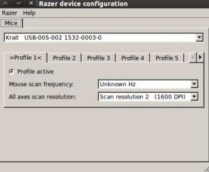

sudo -i
apt-get install python
apt-get install libusb-1.0-0-dev
apt-get install python-qt4
apt-get install cmake
2、下载razercfg-0.17.tar.bz2压缩包,并解压文件
wget http://bues.ch/razercfg/razercfg-0.17.tar.bz2
tar xjvf razercfg-0.17.tar.bz2
cd razercfg-0.17
3、开始安装
首先生成Makefile文件，然后编译并安装，别漏掉第一条命令后面的小点
sudo -i
cmake .
make
make install
为了在系统启动时自动加载razerd守护程序，你需要运行init-script脚本文件，执行如下命令：
sudo -i # become root
cp ./razerd.initscript /etc/init.d/razerd
ln -s /etc/init.d/razerd /etc/rc2.d/S99razerd
ln -s /etc/init.d/razerd /etc/rc5.d/S99razerd
ln -s /etc/init.d/razerd /etc/rc0.d/K01razerd
ln -s /etc/init.d/razerd /etc/rc6.d/K01razerd
4、razer的图形配置工具
首先确保razerd已经运行，如果配置好了第三步，可以重启电脑或者在终端输入命令
razerd 来启动。
命令行配置工具有qrazercfg，或者使用更酷的图形配置工具qrazercfg，在终端输入qrazercfg来启动这个小工具，运行界面如图：

它提供的配置是不是很丰富呢，基本上windows上面的配置选项在这里都可以找到。